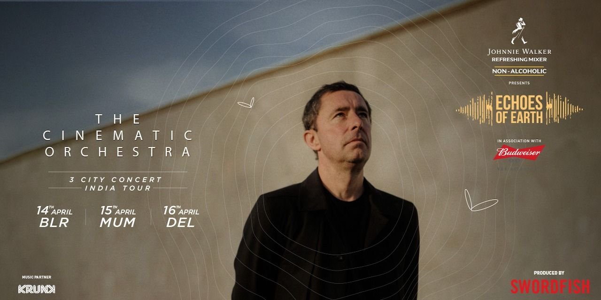

events info

events info
Echoes of Earth presents The Cinematic Orchestra 3 city concert tour across India. A one-day affair in each city, offering the unparalleled experience of Echoes. The festival aims at highlighting the local ecosystems and focusing on the successful conservation stories & the eco warriors leading the same. The Cinematic Orchestra creates a unique blend of jazz, classical, electronic, and film score music. They are known for their emotive compositions, often featuring live orchestration and vocals. With four studio albums to date, they made a comeback after a 12-year break with their album "To Believe" in 2019. The band has collaborated with numerous artists and is praised by critics for their innovative & genre defying music. Popular tracks include "To Build a Home" and "All That You Give". They are also known for their captivating live performances in prestigious venues worldwide.